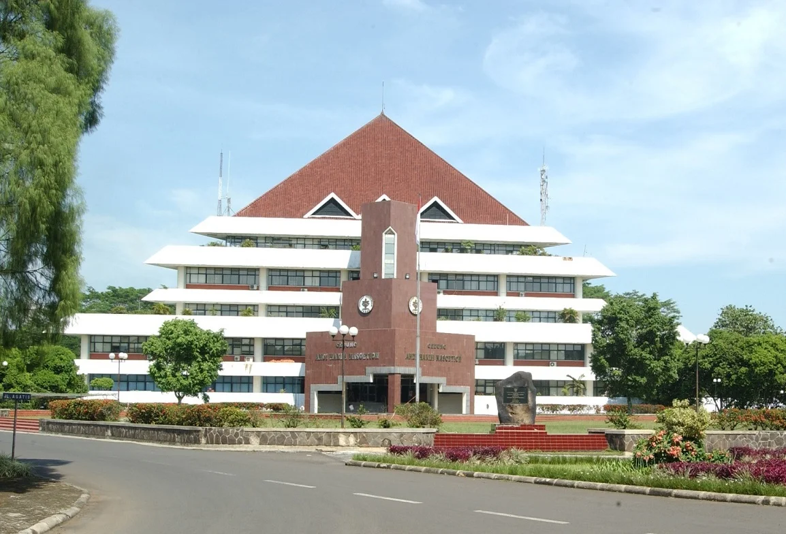

Institut Pertanian Bogor (IPB)
Institut Pertanian Bogor (IPB) merupakan Perguruan Tinggi Negeri yang berlokasi di Bogor, Jawa Barat. IPB awalnya merupakan fakultas pertanian dari Universitas Indonesia. Namun, pada 1 September 1963, IPB lepas dari Universitas Indonesia dan berdiri menjadi sebuah institut pertanian. Pada tanggal 7 November 2017 lalu Institut Pertanian Bogor (IPB) resmi mendapatkan status akreditasi dengan peringkat A (sangat baik) berdasarkan hasil rapat pleno Badan Akreditasi Nasional Perguruan Tinggi (BAN-PT). Berdasarkan hasil penilaian Business Innovation Center–Kementerian Riset, Teknologi dan Pendidikan Tinggi RI, IPB menjadi perguruan tinggi di Indonesia yang paling banyak melakukan inovasi dalam Inovasi Indonesia paling Prospektif (sebanyak 39,71 persen) selama sepuluh tahun berturut-turut (2008-2018). Hal tersebut terkait dengan keberhasilan IPB menghasilkan inovasi-inovasi dengan kualitas berskala nasional maupun internasional. Pada tahun 2020, IPB Berhasil mendapatkan peringkat 1 Kampus terbaik se-Indonesia menurut Kemdikbud. Sebelum diresmikan pada tahun 1963, IPB adalah sebuah fakultas pertanian pada Universitas Indonesia. Pada tanggal 1 September 1963. Presiden Pertama Indonesia, Ir. Soekarno, melakukan peletakkan batu pertama pembangunan kampus sekaligus menandai peresmian Institut Pertanian Bogor sebagai sebuah perguruan tinggi mandiri. Saat ini, Rektor IPB untuk periode 2017-2022 adalah Prof. Dr. Arif Satria, S.P., M.Si.
Sejarah
Institut Pertanian Bogor adalah lembaga pendidikan tinggi pertanian yang secara historis merupakan bentukan dari lembaga-lembaga pendidikan menengah dan tinggi pertanian serta kedokteran hewan yang dimulai telah pada awal abad ke-20 di Bogor. IPB saat ini berlokasi di Jalan Raya Dramaga, Kecamatan Dramaga, Kabupaten Bogor, Provinsi Jawa Barat.
Sebelum Perang Dunia II, lembaga-lembaga pendidikan menengah tersebut dikenal dengan nama Middelbare Landbouwschool Buitenzorg (Sekolah Menengah Pertanian), Middelbare Bosbouwschool Buitenzorg (Sekolah Menengah Kehutanan) dan Nederlandsch Indische Veeartsenschool (Sekolah Kedokteran Hewan Hindia Belanda).
Lahirnya Institut Pertanian Bogor (IPB) pada tanggal 1 September 1963 berdasarkan keputusan Menteri Perguruan Tinggi dan Ilmu Pengetahuan (PTIP) No. 92/1963 yang kemudian disahkan oleh Presiden RI Pertama dengan Keputusan No. 279/1965. Pada saat itu, dua fakultas di Bogor yang berada dalam naungan UI berkembang menjadi lima fakultas, yaitu Fakultas Pertanian, Fakultas Kedokteran Hewan, Fakultas Perikanan, Fakultas Peternakan dan Fakultas Kehutanan. Pada tahun 1964, lahir Fakultas Teknologi dan Mekanisasi Pertanian yang kini menjadi Fakultas Teknologi Pertanian.
Pada tahun 1980 IPB membangun laboratorium raksasa di Bukit Daham Ilnuris, Singasari, Jonggol seluas kurang lebih 200 hektare. Saat ini, kawasan tersebut terbagi dua yaitu 169 hektare untuk UP3J milik Fakultas Peternakan Melalui SK Rektor no. 020/Um/1993 dan 70 hektare Kebun Pendidikan yang dikelola oleh Fakultas Pertanian. Kawasan ini memiliki fungsi sebagai sarana penunjang pendidikan, penelitian, pengabdian masyarakat, penyuluhan bidang peternakan atau pertanian secara umum.
Pada tanggal 26 Desember 2000, pemerintah Indonesia mengesahkan status otonomi IPB berdasarkan PP No. 152. Semenjak itu, IPB merupakan perguruan tinggi berstatus badan hukum milik negara (BHMN).
Pada tahun 2005, IPB menerapkan sistem mayor-minor sebagai pengganti sistem kurikulum nasional. Sistem ini hanya diterapkan di IPB. Setiap mahasiswa IPB dimungkinkan mengambil dua atau bahkan lebih mata keahlian (jurusan) yang diminatinya.
Pada pertengahan tahun 2019, IPB dalam bahasa Inggris secara resmi berubah nama dari Bogor Agriucultural University menjadi IPB University.